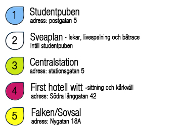
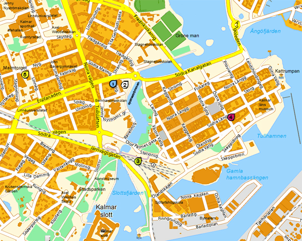

Nödvändig information
Fredag
11.00-14.00, Incheckning (Calmare Studentpub) Deposition 100 SEK / Person
15.00-18.00, Lekar (Sveaplan)
19.00-20.00, Liveband (Sveaplan)
19.00-01.00, Pubkväll (Calmare Studentpub)
Lördag
08.00-10.00, Frukost (För de som har sovsal)
12.00-14.00, Båtbygge (Sveaplan)
14.30, Båtracet i systraströmmen (pågår tills vi är klara)
18.00-21.00, Sittning
19.00-01.00, Pubkväll (Calmare Studentpub)
22.00-02.00, Kårkväll (Hotell Witt)
Söndag
08.00-10.00, Frukost (För de som har sovsal)
12.00, Utcheckning (Calmare Studentpub). Få tillbaka depositionen vid utcheckning
(med reservation för ändringar)
Hitta till de olika platserna
|  |
|  |